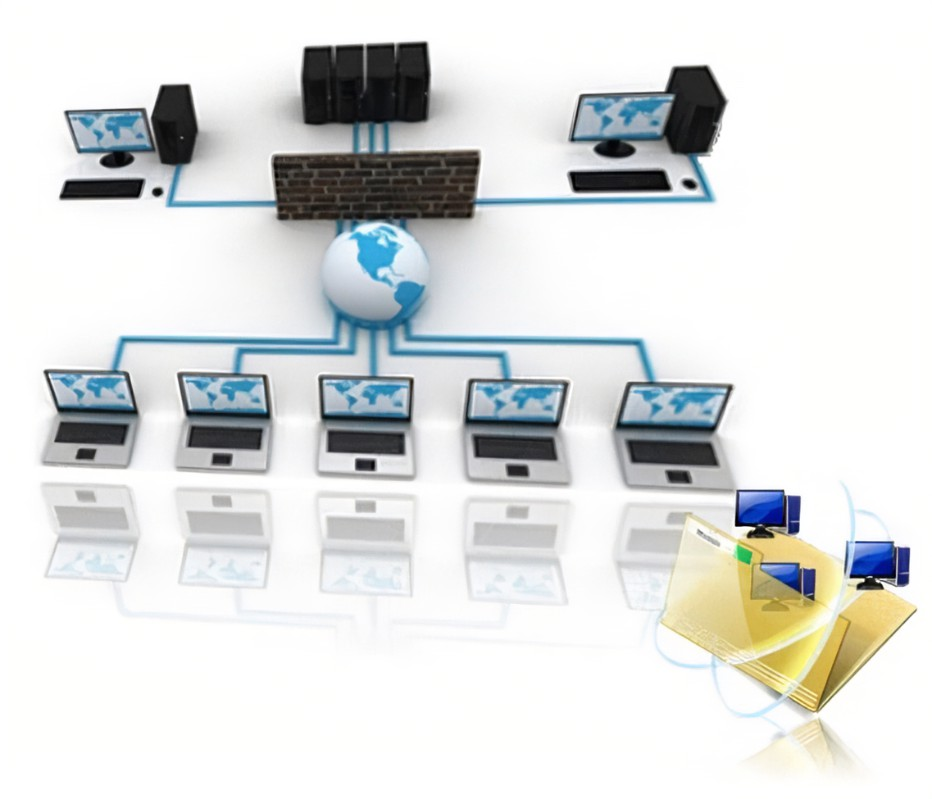

4.3.1 Redes de interconexión dinámica (Indirecta: Medio Compartido, Conmutadas)
Uno de los criterios más importantes para la clasificación de las redes es el que tiene en cuenta la situación de la red en la máquina paralela, dando lugar a dos familias de redes: redes estáticas y redes dinámicas. Una red estática es una red cuya topología queda definida de manera definitiva y estable durante la construcción de la máquina paralela.
La red simplemente une los diversos elementos de acuerdo a una configuración dada. Se utiliza sobre todo en el caso de los multicomputadores para conectar los diversos procesadores que posee la máquina. Por la red sólo circulan los mensajes entre procesadores, por lo que se dice que la red presenta un acoplamiento débil. En general, en las redes estáticas se exige poca carga a la red.
Una red dinámica es una red cuya topología puede variar durante el curso de la ejecución de un programa paralelo o entre dos ejecuciones de programas. La red está constituida por elementos materiales específicos, llamados commutadores o switches.
Las redes dinámicas se utilizan sobre todo en los multiprocesadores. En este caso, la red une los procesadores a los bancos de memoria central. Cualquier acceso de un procesador a la memoria (bien sea para acceder a los datos o a las instrucciones) debe pasar a través de la red, por lo se dice que la red tiene un acoplamiento fuerte. La red debe poseer un rendimiento extremadamente bueno para no demorar demasiado a los procesadores que acceden a memoria.
